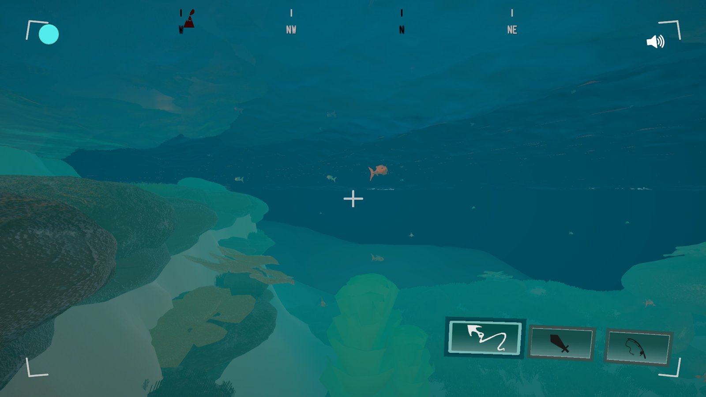

Programmeur IA & Gameplay
Fanch Jossec
Étudiant en dernière année de programmation de jeux vidéo à Créajeux. Je conçois des IA d’ennemis et des systèmes de gameplay, sur Unreal Engine et Unity.
Projets
Projet de soutenance (en cours)
Unreal Engine · State Trees · Behavior TreesUne IA avancée dans le style de l’alien d’Alien: Isolation.

Fish n’ Ship
Unity · C# · multijoueur · 2026IA des ennemis et mouvement procédural des tentacules du kraken.

GodBreak
C++ · SFMLJeu bac à sable. Arbre de compétences et systèmes de gameplay.

Niva
Platformer 2D« Die & retry » dans l’espace. Level design et interface des menus.
Compétences
Moteurs
Unreal Engine, Unity
Langages
C++, C#, C
Outils
JetBrains Rider, Visual Studio, GitHub
Langues
Français, anglais (C1)
Parcours
Créajeux, dernière année sur quatre
Lycée Benjamin Franklin
À propos
Curieux, persévérant et animé par une soif de découverte, j’aime apprendre et relever de nouveaux défis. Mes projets m’ont permis de développer la gestion de projet, l’esprit d’équipe, la communication, l’adaptabilité et la résolution de problèmes.
Autonome et rigoureux, je sais prendre des initiatives pour mener à bien mes missions. En dehors du code : lecture, sport et jeux vidéo.
Contact
Je cherche un poste de programmeur IA / gameplay. Un projet, une offre, une question ? Écris-moi.